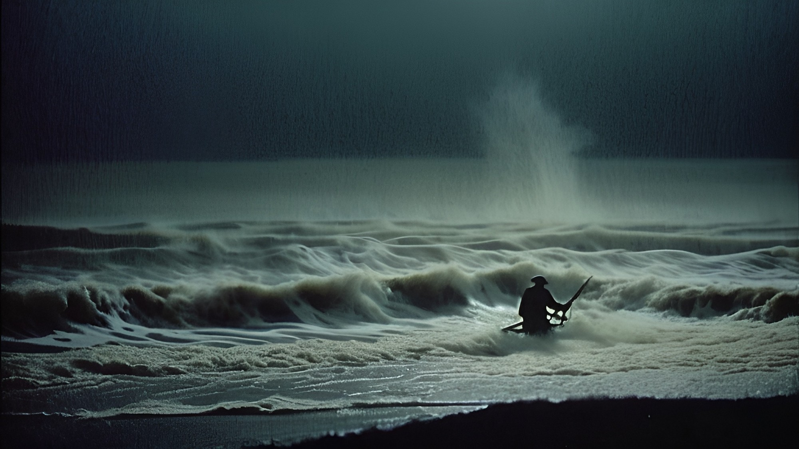
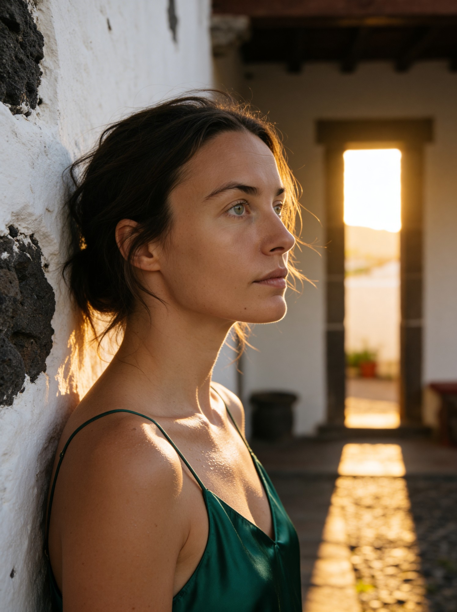

01 / Narrative AI Film
01 / Narrative AI FilmNarrative AI Film
The Passenger
Atmosphere-led visual storytelling, built around cinematic framing, tension and a cohesive narrative world.
INDEPENDENT FILMMAKING / GENERATIVE IMAGINATION
Cinematic worlds, distinctive characters and bold visual ideas.
Filmmaking craft meets generative possibility.
01 / SELECTED WORK
A selection of narrative films,
character worlds and commercial studies.
01 / Narrative AI FilmNarrative AI Film
Atmosphere-led visual storytelling, built around cinematic framing, tension and a cohesive narrative world.

02 / Horror / Found Footage / WorldbuildingHorror / Found Footage / Worldbuilding
An interconnected horror universe exploring found-footage aesthetics, unsettling environments and visual mythology.

03 / AI Character / Lifestyle / TravelAI Character / Lifestyle / Travel
A digital character study exploring visual consistency across travel, lifestyle and cinematic environments.
 04 / Digital Character / Luxury / Fashion
04 / Digital Character / Luxury / FashionDigital Character / Luxury / Fashion
Fashion-led storytelling with a distinct character identity, atmospheric interiors and a considered luxury aesthetic.
Beauty / Tech / Commercial
Self-initiated commercial concepts exploring brand storytelling through generative imagery, creative direction and editing.
02 / THE APPROACH
Lanius Films is an independent filmmaking label exploring cinematic storytelling through generative production.
From narrative worlds to character-led content, the focus is on coherent visual direction, atmosphere and the craft of the final edit.
03 / LET’S TALK
For creative teams, recruiters and collaborators.
Get in touch about AI filmmaking, visual development and branded content.